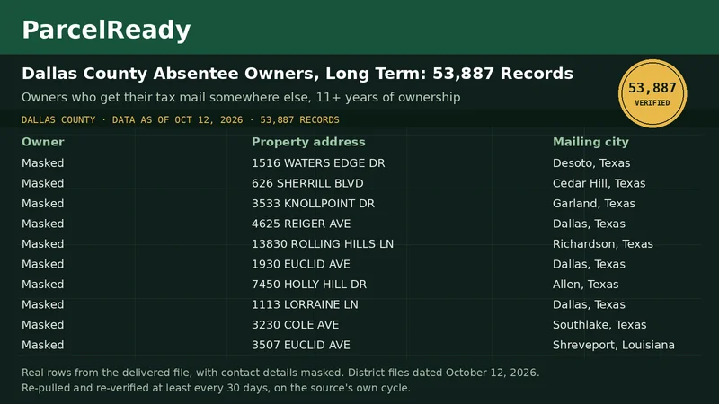

Dallas County Absentee Owners, Long Term
53,887 owners who get their tax mail somewhere else, 11+ years of ownership
Data as of October 12, 2026
Refreshed monthly, plus a full rebuild after each annual certified roll
53,887 records$49 one time